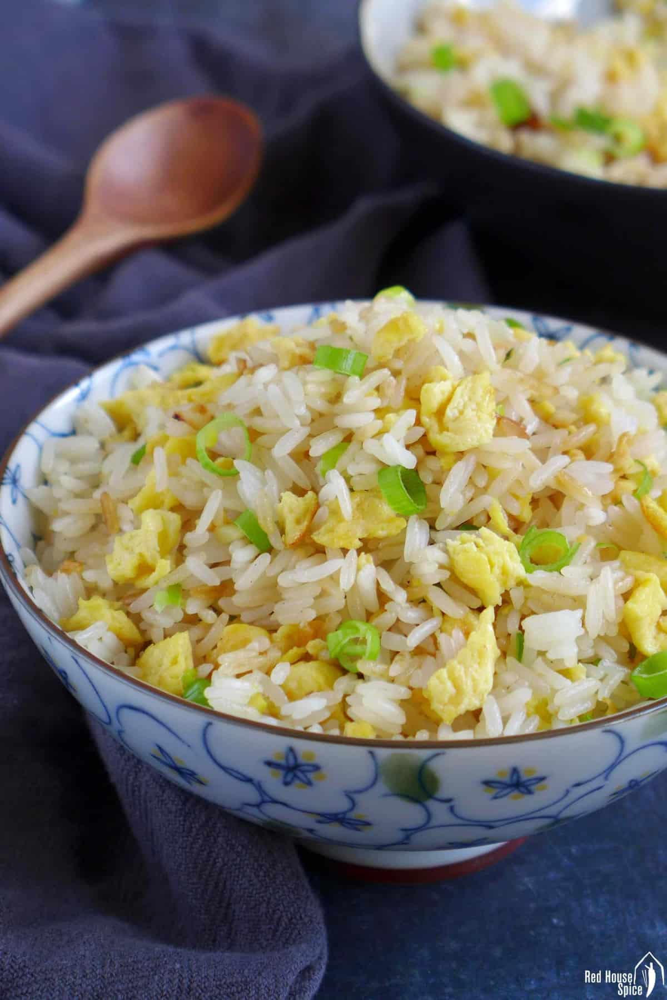

Fried Rice

Ingredients
Hot Dog Meat
Onions
Green Onions
Eggs
Steps
Step One: Add Canola Oil
Step Two: Add Onions, Hot Dog Meat, and Eggs, Stir Fry
Step Three: Add Rice, Stir Fry
Step Four: Add Sauces and Spieces, then Green Onion, Stir Fry